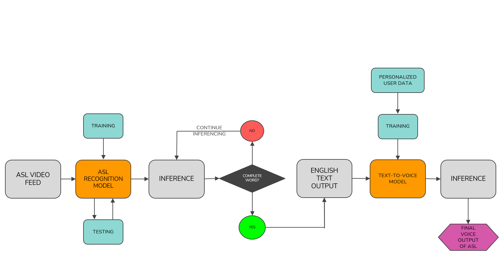

Design Architecture of the ASL Recognition Model
American Sign Language Recognition using Deep Learning
- Project Details: Github
- Result: Watch Video
Project Description
This project employs advanced technologies to enhance the interaction between ASL users and non-ASL users. The ASL Recognition system utilizes computer vision models to interpret ASL gestures and convert them into English. Additionally, the system incorporates a text-to-voice feature, providing an audible translation of the gestures, thereby enriching the communication experience.
Key Features
- ASL Gesture Recognition: Uses computer vision to accurately translate ASL gestures into English text.
- Text-to-Voice System: Converts the translated text into speech, making the communication process seamless and inclusive.
Technologies Used
- Computer Vision Models: For gesture recognition and translation.
- Deep Learning Frameworks: TensorFlow and PyTorch for model training and inference.
- Text-to-Speech Models: Tacotron 2 and WaveGlow for generating natural-sounding speech.